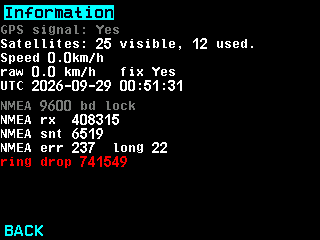

Réception GPS et écran d'information GPS
Comment le Hectare Mini prend la vitesse d'avancement sur son récepteur GPS intégré, ce que signifie la couleur de l'icône de satellite et comment lire l'écran d'information GPS.
Le panneau est équipé d'un récepteur GPS intégré. Il fournit la vitesse d'avancement lorsque le semoir n'a ni capteur de roue ni radar, ou en complément d'un tel capteur. Tant que le récepteur répond et a une position valide, la vitesse vient du GPS. S'il se tait ou perd le signal, le capteur réglé sous « Speed » (vitesse) dans le profil prend le relais de lui-même — vous n'avez rien à commuter.
Le récepteur est activé par l'élément de profil GPS : UBX pour le récepteur intégré (réglage normal) ou NMEA ; « No » (non) le désactive et masque l'icône de satellite.
L'icône de satellite
L'icône se trouve au bord droit de l'écran d'accueil, avec le nombre de satellites utilisés dans son coin inférieur droit.
| Couleur | Signification |
|---|---|
| Rouge | Le récepteur ne répond pas, ou il répond sans position valide — normal à l'intérieur d'un bâtiment et juste après la mise sous tension. Le nombre n'est pas affiché tant que le récepteur est muet. |
| Gris | Position valide, moins de 5 satellites. |
| Jaune | Position valide, de 5 à 7 satellites. |
| Gris | Position valide, 8 satellites ou plus. Les deux états gris ne se distinguent que par le nombre. |
L'écran d'information
Pour l'ouvrir, maintenez « MENU » sur l'écran d'accueil, sélectionnez l'icône de satellite avec « UP » / « DOWN » et appuyez sur « MENU ».

- « GPS signal: » (signal GPS) « Yes » (oui) si le récepteur répond, sinon « No ».
- Satellites — le nombre vus et le nombre utilisés pour la position.
- Speed — la vitesse telle que le semis l'utilise. Sous un petit seuil d'arrêt, elle affiche 0 km/h, afin qu'un semoir à l'arrêt ne compte pas de surface.
- raw — la vitesse non filtrée, et si la position est valide.
- UTC — date et heure du récepteur ; des zéros avant la première position valide.
- Compteurs de réception. En NMEA : octets reçus, phrases valides, erreurs de somme de contrôle et débit en bauds détecté ; en UBX : octets, trames et erreurs.
- ring drop — octets perdus dans le tampon de réception. Un chiffre qui augmente signifie que la liaison avec le récepteur est perturbée.
- BACK quitte l'écran.
L'écran ne fait qu'afficher ; rien n'y est modifiable, et aucun code d'accès n'est nécessaire.
Votre machine fait quelque chose que cette page n'explique pas ? Écrivez à support@agriwelt.com — un ingénieur vous répond.